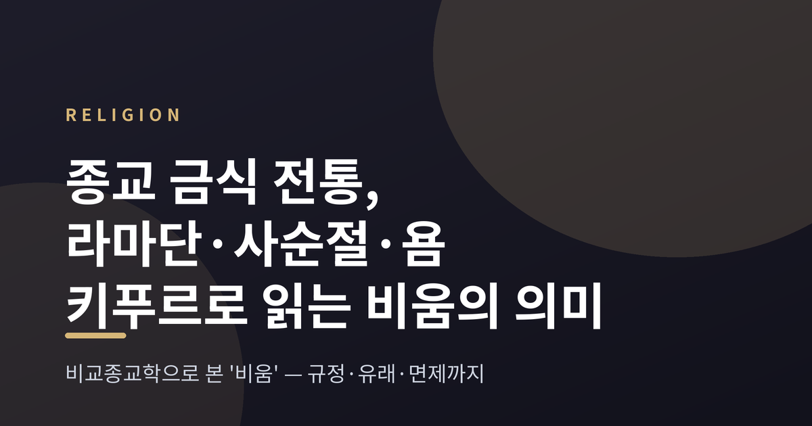
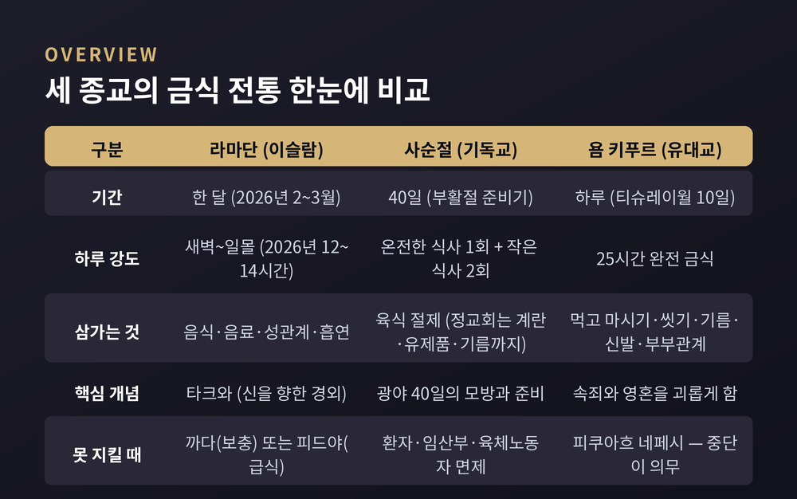
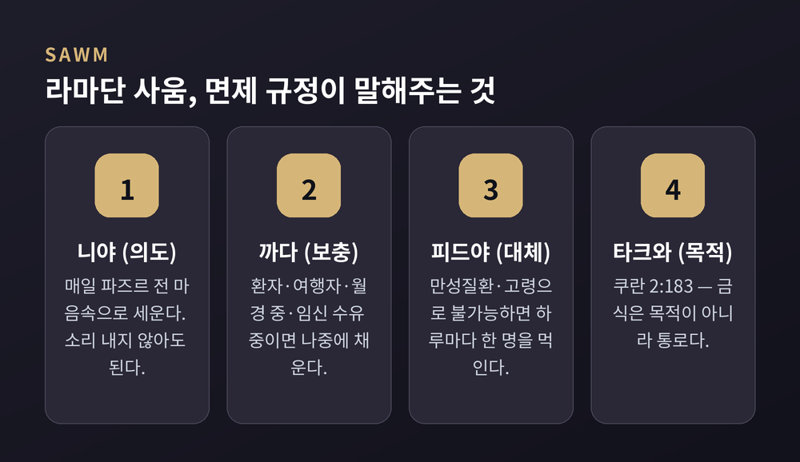
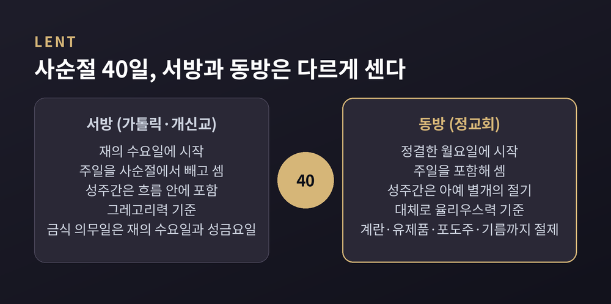
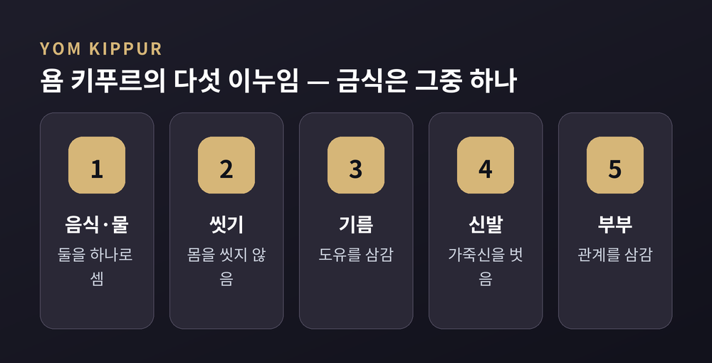
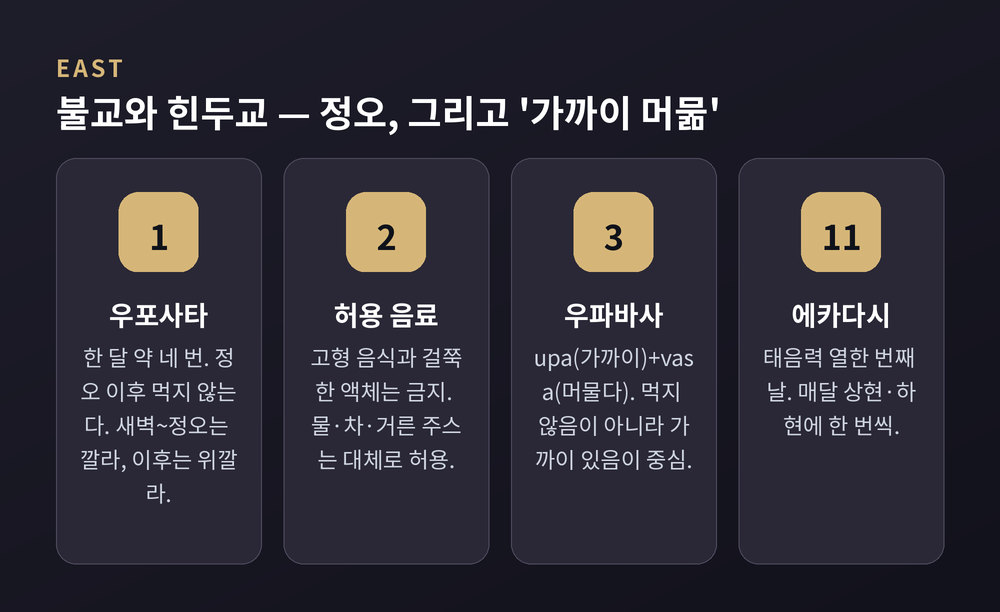

이번 글에서는 세계 종교의 금식 전통을 나란히 놓고 정리해 보겠습니다. 이슬람의 라마단, 기독교의 사순절, 유대교의 욤 키푸르가 중심입니다. 여기에 불교와 힌두교의 절식 관행을 더해 '비움'이라는 말이 각 전통에서 어떻게 다르게 쓰이는지 살펴봅니다.
미리 한 가지만 밝혀두겠습니다. 이 글은 비교종교학의 교양적 관점에서 쓴 것입니다. 어느 신앙이 옳은지를 가리지 않습니다.
먼저 뼈대부터 잡겠습니다. 세 전통의 금식은 기간도, 강도도, 대상도 다릅니다.
라마단의 사움은 한 달 동안 매일, 새벽부터 일몰까지 이어집니다. 사순절은 40일이라는 긴 절기이지만 하루 종일 굶는 방식이 아닙니다. 욤 키푸르는 단 하루, 대신 25시간을 완전히 비웁니다.
기간이 길수록 강도가 낮고, 짧을수록 강도가 높습니다. 우연이라기엔 정연한 대비입니다.

이슬람에서 금식은 사움(sawm)이라 부릅니다. 샤리아의 정의는 명확합니다. 의도를 세우고, 새벽(파즈르)부터 일몰(마그립)까지 금지된 것 일체를 삼가는 것입니다. 음식과 음료, 성관계, 흡연이 그 대상입니다.
여기서 의도, 곧 니야(niyyah)가 중요합니다. 매일 파즈르 전에 마음속으로 세웁니다. 소리 내어 말할 필요는 없습니다. 같은 배고픔이라도 의도가 없으면 사움이 아니라는 뜻입니다.
의무 대상은 성인이고 정신이 온전하며 신체적으로 가능한 무슬림입니다. 그런데 이 규정보다 더 흥미로운 것은 면제 규정입니다.
회복이 예상되는 환자, 여행자, 월경이나 산후 출혈 중인 여성, 임신·수유 중인 여성은 나중에 보충할 수 있습니다. 이를 까다(qada)라 합니다. 만성질환자나 고령으로 쇠약한 이처럼 아예 불가능한 경우에는 피드야(fidya)로 대신합니다. 놓친 하루마다 가난한 이 한 명을 먹이는 방식입니다.
굶지 못하면 먹입니다. 비움의 자리에 나눔이 들어섭니다.

목적은 쿠란 2장 183절이 직접 말합니다. "너희가 타크와를 얻게 하기 위함이라." 타크와는 신을 향한 경외, 절제, 악을 물리침 등으로 잠정 번역됩니다. 금식은 목적이 아니라 통로라는 구조입니다.
같은 절에는 이런 대목도 있습니다. "너희 이전 사람들에게 그러했듯." 이 구절 때문에 금식의 보편성이 자주 언급됩니다만, 고전 주석가들은 오히려 선을 그었습니다. 날수도 시간도 방식도 같다는 뜻이 아니라, 자기 부정이라는 원리가 새롭지 않다는 뜻일 뿐이라는 것입니다.
닮은 것은 형식이 아니라 발상입니다.
한 가지 현실적인 문제도 있습니다. 이슬람력은 태음력이라 라마단이 해마다 옮겨 다닙니다. 2026년 라마단은 2월 17일 무렵 시작해 3월 18일 저녁에 끝날 것으로 예상됐고, 춘분에 가까웠던 덕에 대부분 도시의 금식 시간이 12~14시간 선에서 정리됐습니다. 메카에서 이슬라마바드까지 주요 도시는 평균 11.5~13시간이었습니다.
문제는 고위도입니다. 백야가 오면 일몰이 오지 않습니다. 이 지점에서 학자들의 입장이 갈립니다. 현지 시간을 그대로 지켜야 한다는 엄격한 입장이 있고, 낮과 밤이 정상적으로 작동하는 가장 가까운 나라의 시간을 따르자는 입장이 있습니다. 무슬림세계연맹은 위도 48도를 넘는 지역에 추정을 허용하는 파트와를 냈습니다.
정답이 하나로 모이지 않았다는 사실 자체가 이 전통이 살아 있다는 증거이기도 합니다.
사순절의 시작은 소박했습니다. 초기 기독교인들은 부활절을 앞두고 하루나 이틀 정도만 금식했던 것으로 보입니다.
313년 기독교가 공인된 뒤 관행이 정착합니다. 기도와 금식에 집중하는 40일 준비기가 자리를 잡았고, 이 40일 금식기는 니케아 공의회에서 정리됐습니다.
왜 40일일까요. 성경에서 40이라는 수가 반복되기 때문입니다. 노아의 홍수는 40일 40밤 동안 이어졌습니다. 모세는 십계명을 받으려 시나이산에서 40일을 보냈습니다. 엘리야는 하나님의 산까지 40일을 걸었습니다. 가장 직접적인 근거는 예수가 공생애에 앞서 광야에서 40일 동안 시험받은 사건입니다.
문제는 그 40일을 세는 법이 갈린다는 점입니다.
서방 교회는 재의 수요일에 시작하고, 주일을 사순절에서 빼고 셉니다. 동방 교회는 정결한 월요일에 시작하고, 주일을 포함해 셉니다. 동방에서는 성주간이 사순절 안이 아니라 아예 별개의 절기입니다. 부활절 기준이 되는 역법도 다릅니다. 동방 정교회는 대체로 율리우스력을 따르기에 서방보다 늦어지는 경우가 많습니다.

강도도 다릅니다.
가톨릭의 규정은 생각보다 구체적입니다. 금식 의무는 만 18세부터 59세까지이고, 육식 절제 의무는 만 14세부터입니다. 금식의 내용은 온전한 식사 한 번에 더해, 합쳐도 한 끼가 되지 않는 작은 식사 두 번입니다. 금식과 절제가 모두 의무인 날은 재의 수요일과 성금요일 이틀이며, 사순절의 모든 금요일은 절제 의무일입니다. 환자와 임신·수유 중인 여성, 육체노동에 종사하는 이는 면제됩니다. 이 틀은 1966년 교황 바오로 6세의 사도헌장 「Paenitemini」가 반포한 것이고, 지역 적용은 각국 주교회의에 맡겨졌습니다.
정교회의 대사순절은 훨씬 엄격합니다. 육류와 생선은 물론 계란, 유제품, 포도주, 기름까지 삼갑니다.
다만 정교회 자신의 설명은 음식 이야기에 머물지 않습니다. 대사순절은 기도와 영적 수련을 강화하고, 예배 참석을 늘리며, 성서와 교부들의 저작을 깊이 공부하고, 오락과 소비를 줄이며 자선과 선행에 집중하는 기간이라고 말합니다.
먹지 않는 것은 그중 하나일 뿐입니다.
유대력에서 가장 거룩한 날로 꼽히는 날입니다. 티슈레이월 10일, 양력으로는 대체로 9월 말에서 10월 초에 놓입니다.
이날의 금식은 25시간입니다. 24시간이 아닙니다. 전날 일몰 직전에 시작해 당일 밤이 온 뒤에 끝나기에, 앞뒤로 여유를 더한 25시간이 됩니다.
내용도 독특합니다. 할라카는 이날 다섯 가지 이누임(innuyim), 곧 '다섯 아픔'을 규정합니다. 먹고 마시는 것을 하나로 묶고, 여기에 씻는 것, 기름 바르는 것, 신발 신는 것, 부부 관계를 더합니다.
금식은 다섯 중 하나에 불과합니다.

근거는 레위기 16장 29~30절입니다. "일곱째 달 열흘날에 너희는 스스로 괴롭게 하고 아무 일도 하지 말라." 이 구절을 히브리어로 들여다보면 흥미로운 지점이 나옵니다.
히브리어로 금식은 촘(tzom)입니다. 그런데 욤 키푸르 계명에 쓰인 단어는 tzom이 아닙니다. 명령은 "너희 영혼을 괴롭게 하라"입니다. 텍스트 자체가 금식보다 넓은 것을 가리키고 있는 셈입니다.
면제 규정에서는 이 전통의 성격이 더 선명해집니다.
전통 관습상 의무 연령은 남성 만 13세 초과, 여성 만 12세 초과입니다. 9세 미만에게는 금식을 권하지 않습니다. 13세 미만 아동, 임신 중인 사람, 병자는 의무가 없습니다.
핵심은 피쿠아흐 네페시(pikuach nefesh), '생명을 구함'이라는 원리입니다. 위험한 의학적 상태에서는 금식이 면제되는 데 그치지 않습니다. 오히려 금식을 중단해야 할 의무가 생깁니다.
면제가 아니라 반대 의무입니다. 이 차이는 작아 보이지만 큽니다. 규정 위에 생명이 놓여 있다는 선언이기 때문입니다.
아브라함 계열 밖으로 나가면 결이 또 달라집니다.
불교에는 우포사타(Uposatha)가 있습니다. 안식일 격의 날로, 신월과 만월, 두 번의 반달에 맞춰 한 달에 대략 네 번 돌아옵니다. 이날 재가자는 오계에 세 계를 더합니다. 정오 이후 먹지 않기, 오락과 장식을 삼가기, 높고 사치스러운 침상에서 자지 않기입니다.
시간 구분이 정밀합니다. 새벽부터 정오까지는 깔라(kala), 곧 적절한 때입니다. 정오부터 다음 날 새벽까지는 위깔라(vikala), 부적절한 때입니다. 고형 음식과 걸쭉한 액체는 금하되 물과 차, 거른 과일 주스는 대체로 허용합니다.
목적이 분명합니다. 삶을 단순하게 하고, 집착을 줄이고, 명상과 공부를 위해 마음을 가볍게 유지하는 것입니다. 고행 자체가 목적이 아닙니다.
힌두교로 오면 어원이 곧 설명입니다. 산스크리트어로 금식은 우파바사(upavasa)입니다. upa는 '가까이', vasa는 '머물다'입니다. 문자 그대로 "가까이 머물다", 곧 신 가까이 있음을 뜻합니다.
먹지 않음이 아니라 가까이 있음이 단어의 중심입니다.
대표적인 금식일로는 에카다시가 있습니다. eka(하나)와 dasha(열)를 합쳐 열하나, 태음력의 열한 번째 날입니다. 매달 두 번, 상현과 하현에 각각 한 번씩 돌아옵니다. 아홉 밤을 뜻하는 나브라트리도 있습니다. 봄과 가을에 한 번씩, 1년에 두 번 열립니다. 다만 금식 방식은 사람마다 다릅니다. 물만 마시는 완전 금식도 있고, 과일과 우유, 비곡물 음식을 먹는 부분 금식도 있습니다.

여기까지만 보면 금식이 경건의 척도처럼 보입니다. 그런데 각 전통은 오래전부터 스스로 그 생각을 경계해왔습니다.
이사야 58장은 위선적 예배를 정면으로 칩니다. 하나님이 택하는 금식은 불의의 결박을 풀고, 억눌린 자를 자유케 하며, 굶주린 자에게 빵을 나누고, 헐벗은 자를 입히는 것이라고 말합니다.
마태복음 6장 16절 이하도 같은 결입니다. 사람들에게 보이려고 얼굴을 흉하게 하는 금식을 비판합니다. 은밀한 중에 계신 아버지께서 갚으신다는 것입니다.
두 본문의 진단은 하나로 모입니다. 외적 실천과 내적 실재가 갈라졌다는 것. 수단을 목적으로 바꿔버린 '기계적 종교'라는 것입니다.
이 경계는 기독교만의 것도 아닙니다. 욤 키푸르 계명이 tzom 대신 "영혼을 괴롭게 하라"를 쓴 것, 정교회가 대사순절을 자선과 함께 말하는 것, 힌두교의 upavasa가 결핍이 아니라 관계를 가리키는 것, 불교의 계율이 고행이 아니라 가벼움을 겨냥하는 것. 방향이 같습니다.
물론 한계도 인정해야 합니다. 형태가 비슷하다고 의미까지 같지는 않습니다. 라마단의 타크와와 욤 키푸르의 속죄와 사순절의 준비와 우포사타의 가벼움은 서로 다른 신학적 지도 위에 놓인 개념입니다. 이 글은 그 지도들을 나란히 펼쳐 놓았을 뿐, 하나로 포개지 않았습니다.
정리하면 이렇습니다.
세 전통은 서로 다른 시간표를 씁니다. 라마단은 한 달을 나눠 매일 조금씩, 욤 키푸르는 하루에 몰아서, 사순절은 40일에 걸쳐 느슨하게. 규정의 세부도 제각각입니다. 만 18세부터 59세까지라는 조항과, 위도 48도라는 기준과, 정오라는 경계선은 같은 세계관에서 나온 말이 아닙니다.
그런데 면제 규정을 들여다보면 이상하게 닮은 데가 있습니다. 아픈 사람은 하지 않아도 됩니다. 임신한 사람도 마찬가지입니다. 못 하면 대신 남을 먹입니다. 위험하면 오히려 멈춰야 합니다.
비움을 명령한 전통들이 하나같이 '비우지 않아도 되는 사람'을 먼저 정해두었습니다.
"비움은 목적이 아니라 자리를 내는 일이다."
무엇을 위해 자리를 내느냐고 물으신다면, 각 전통은 서로 다른 이름으로 답할 것입니다. 다만 그 자리를 자기 자신으로 다시 채우지 말라는 데에는 모두 뜻이 같아 보입니다.